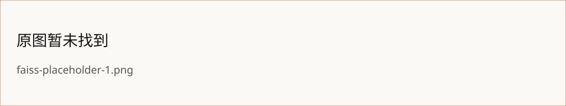

所属 Topic：推荐系统 · 类型：工具
Faiss 分享
一、简介#
1.1 简介#
- Faiss是Facebook的AI团队开源的一套用于做聚类或者相似性搜索的软件库，底层是用C++实现。Faiss因为超级优越的性能，被广泛应用于推荐相关的业务当中。
- 能为稠密向量提供高效相似度搜索和聚类，支持十亿级别向量的搜索。
- 向量计算本来就快，Faiss在向量计算的基础上加入索引，类似ES搜索，所以更快。为了得到时间和空间的最优，Faiss使用了最为核心的PCA降维和PQ乘积量化两个手段进行向量压缩和编码。
- Faiss的工作，就是把我们自己的候选向量集封装成一个index数据库，它可以加速我们检索相似向量TopK的过程，其中有些大部分索引还支持GPU构建，可谓是强上加强。
1.2 Faiss 特性：#
- 1、提供多种检索方法
- 2、速度快
- 3、可存在内存和磁盘中
- 4、C++实现，提供Python封装调用
- 5、大部分算法支持GPU实现
1.3 几乎覆盖了所有的 AI 场景#
向量检索的应用场景如下图所示，它几乎覆盖了大部分的可以应用AI的业务场景。

二、应用示例#
2.1 安装#
Anaconda安装#
-
使用Anaconda安装使用faiss是最方便快速的方式，在conda安装时会自行安装所需的libgcc, mkl, numpy模块。
-
faiss的cpu版本目前仅支持Linux和MacOS操作系统，gpu版本提供可在Linux操作系统下用CUDA8.0/CUDA9.0/CUDA9.1编译的版本。
#安装cpu版本
#更新conda
conda update conda
#先安装mkl
conda install mkl
#安装faiss-cpu
conda install faiss-cpu -c pytorch
#测试安装是否成功
python -c "import faiss"
#安装gpu版本
#确保已经安装了CUDA，否则会自动安装cup版本。
conda install faiss-gpu -c pytorch # 默认 For CUDA8.0
conda install faiss-gpu cuda90 -c pytorch # For CUDA9.0
conda install faiss-gpu cuda91 -c pytorch # For CUDA9.1
项目中安装#
#项目中安装cpu版本faiss
pip install -i https://pypi.tuna.tsinghua.edu.cn/simple faiss-cpu==1.7.2
2.2 Faiss 索引类型#
#
1 Index的封装类
-
Faiss提供了针对不同场景下应用对Index的封装类，这里我们针对Index基类进行说明。
#
2 Faiss 索引类型
-
Exact Search for L2 #基于L2距离的确定搜索匹配
-
Exact Search for Inner Product # 基于内积的确定搜索匹配
-
Hierarchical Navigable Small World graph exploration # 分层索
-
Inverted file with exact post-verification # 倒排索引
-
Locality-Sensitive Hashing (binary flat index) # 本地敏感hash
-
Scalar quantizer (SQ) in flat mode # 标量量化索引
-
Product quantizer (PQ) in flat mode # 笛卡尔乘积索引
-
IVF and scalar quantizer # 倒排+标量量化索引
-
IVFADC (coarse quantizer+PQ on residuals) # 倒排+笛卡尔乘积索引
-
IVFADC+R (same as IVFADC with re-ranking based on codes) # 倒排+笛卡尔乘积索引 + 基于编码器重排
#
3 Faiss原理
-
向量计算是一个最经典的时间空间优化问题，在查询过程中建立更多地索引固然可以提升查询速度，但是却有占据了存储空间，我们希望系统可以即减少索引又能提升查询性能。
-
为了得到时间和空间的最优，Faiss使用了PCA和PQ两个手段进行向量压缩和编码，当然还有其它的一些优化手段，但是PCA和PQ是最为核心的。
PCA降维#
- PCA是一种降维手段，简单理解就是将高维向量变为低维，这样就可以有效的节省存储空间
PQ编码#
- Product quantization(乘积量化PQ)，PQ是一种建立索引的方式。
- 假设原始向量是1024维，可以把它拆解成8个子向量，每个子向量128维。
- 然后对每个字向量的全部50k数据分别作Kmeans计算，假设设置Kmeans的K为256。就得到了8组，每组256个中心点这样的码本，这个码本可以对50k个向量进行编码。
- 也就是说把编码从原始的1024个向量需要32bit，压缩成了只需要log(256)，8位来表示。这样每个向量的索引就减少了许多。
2.3 示例#
1 IndexFlatL2 / IndexFlatIP#
-
IndexFlatL2 / IndexFlatIP为最基础的精确查找
-
store_df 为店铺向量信息
-
datas 为转换成二维array
import os
import pandas as pd
import numpy as np
import json
import pymysql
import redis
import faiss
...
store_df # 为店铺向量信息
item_id item_id_index vec
024627 0 [16, 0, 8, 0, 21, 34]
124628 1 [81, 2, 2, 1, 5, 7]
224629 2 [129, 3, 3, 2, 9, 16]
324630 3 [111, 3, 4, 3, 10, 17]
424631 4 [73, 1, 7, 4, 18, 25]
............
datas[:10] #为转换成二维array
[['16', ' 0', ' 8', ' 0', ' 21', ' 34'],
['81', ' 2', ' 2', ' 1', ' 5', ' 7'],
['129', ' 3', ' 3', ' 2', ' 9', ' 16'],
['111', ' 3', ' 4', ' 3', ' 10', ' 17'],
['73', ' 1', ' 7', ' 4', ' 18', ' 25'],
['15', ' 0', ' 8', ' 5', ' 21', ' 35'],
['132', ' 1', ' 4', ' 6', ' 12', ' 19'],
['115', ' 3', ' 3', ' 7', ' 7', ' 13'],
['94', ' 2', ' 1', ' 8', ' 2', ' 3'],
['126', ' 3', ' 3', ' 9', ' 7', ' 13']]
# 记录数据维度
dimension = datas.shape[1]
# 定义量化器,L2距离，即欧式距离（越小越好）
index = faiss.IndexFlatL2(dimension)
# 定义量化器,点乘，归一化的向量点乘即cosine相似度（越大越好）
# index = faiss.IndexFlatIP(dimension)
index_id = faiss.IndexIDMap(index)
index_id.add_with_ids(datas, ids)
topk = 10 # 定义召回向量个数
D, I = index.search(datas[:5], topk)
D
array([[ 0., 27., 507., 730., 2347., 2396., 2465., 2678., 2690.,
2952.],
[ 0., 185., 217., 244., 592., 661., 754., 800., 811.,
850.],
[ 0., 48., 71., 138., 159., 213., 234., 269., 328.,
390.],
[ 0., 58., 84., 204., 211., 253., 287., 328., 451.,
462.],
[ 0., 592., 635., 861., 989., 1104., 1199., 1220., 1234.,
1288.]], dtype=float32)
I
array([[ 0, 5, 20, 19, 39, 33, 35, 51, 43, 47],
[ 1, 14, 10, 8, 4, 26, 28, 29, 23, 30],
[ 2, 6, 9, 11, 13, 16, 7, 15, 3, 21],
[ 3, 7, 12, 11, 15, 13, 9, 2, 16, 6],
[ 4, 1, 14, 10, 32, 28, 26, 30, 8, 29]])
2 LSH 局部感应哈希#
-
局部感应哈希，如果两个向量在原有的数据空间是相似的，那么分别经过哈希函数转换以后的它们也具有很高的相似度
index = faiss.IndexLSH(dimension, dimension * 2)
index_id = faiss.IndexIDMap(index)
index_id.add_with_ids(datas, ids)
topk = 10 # 定义召回向量个数
D, I = index.search(datas[:5], topk)
D
array([[0., 2., 2., 3., 3., 4., 4., 4., 4., 4.],
[0., 0., 0., 0., 0., 0., 0., 0., 0., 0.],
[0., 0., 0., 0., 0., 0., 0., 0., 0., 0.],
[0., 0., 0., 0., 0., 0., 0., 0., 0., 0.],
[0., 1., 1., 2., 2., 2., 2., 2., 2., 2.]], dtype=float32)
I
array([[ 0, 5, 4, 18, 17, 7, 6, 8, 3, 9],
[ 3, 7, 9, 1, 6, 8, 11, 12, 10, 2],
[ 3, 7, 9, 1, 6, 8, 11, 12, 10, 2],
[ 3, 7, 9, 1, 6, 8, 11, 12, 10, 2],
[ 4, 18, 17, 7, 6, 8, 9, 3, 1, 10]])
3 Kmeans 聚类#
-
kmeans算法就是就是先找中心点，然后算中心点其余各点的距离，对各个点进行归类的过程
ncentroids = int(datas.shape[0] / 100)
if ncentroids<10:
ncentroids=10
niter = int(datas.shape[0] / 300)
if niter<50:
niter=50
verbose = True
dimension = datas.shape[1]
'''
d：向量维度
ncentroids：聚类中心
niter：迭代次数
verbose：是否打印迭代情况
gpu：是否使用GPU
'''
kmeans = faiss.Kmeans(dimension, ncentroids, niter=niter, verbose=verbose, gpu=True)
kmeans.train(datas)
index=kmeans.index
topk = 10 # 定义召回向量个数
D, I = index.search(datas[:5], topk)
D
array([[ 1799.2109 , 5826.703 , 6702.585 , 7633.297 , 7821.547 ,
12274.176 , 14428.595 , 17165.686 , 19486.084 , 29264.387 ],
[ 341.52066, 2211.2627 , 3210.086 , 5672.6543 , 5738.547 ,
6314.547 , 10913.82 , 13926.226 , 18237.137 , 18491.78 ],
[ 404.65405, 2510.611 , 5743.5957 , 9350.961 , 9439.297 ,
10513.297 , 15613.387 , 16136.513 , 19472.174 , 25115.867 ],
[ 457.87152, 1170.2477 , 5097.948 , 6310.211 , 7289.297 ,
8049.047 , 14529.939 , 15457.468 , 15674.762 , 21726.957 ],
[ 817.88434, 2124.086 , 2914.3062 , 4872.797 , 5435.047 ,
6416.1836 , 9407.468 , 13873.655 , 17162.322 , 18365.387 ]],
dtype=float32)
I
array([[8, 1, 4, 0, 2, 3, 5, 9, 7, 6],
[1, 3, 8, 5, 0, 2, 4, 7, 6, 9],
[3, 1, 5, 8, 2, 0, 6, 7, 4, 9],
[3, 1, 5, 8, 2, 0, 7, 4, 6, 9],
[1, 8, 3, 2, 0, 5, 4, 7, 9, 6]])
4 IndexIVFFlat 加速搜索#
-
IndexIVFFlat称为倒排文件索引，是使用K-means建立聚类中心，
-
通过查询最近的聚类中心，比较聚类中的所有向量得到相似的向量，是一种加速搜索方法的索引。
# niter #聚类中心的个数
niter = int(datas.shape[0] / 300)
if niter<50:
niter=50
quantizer = faiss.IndexFlatL2(dimension) # 定义量化器
index = faiss.IndexIVFFlat(quantizer, dimension, niter, faiss.METRIC_L2) #也可采用向量內积
index.nprobe = 10 #查找聚类中心的个数，默认为1个，若nprobe=nlist则等同于精确查找
index.train(datas) #需要训练
index.add(datas) # 添加训练时的样本
topk = 10 # 定义召回向量个数
D, I = index.search(datas[:5], topk)
D
array([[ 0., 27., 507., 730., 2347., 2396., 2465., 2678., 2690.,
2952.],
[ 0., 185., 217., 244., 592., 661., 754., 800., 811.,
850.],
[ 0., 48., 71., 138., 159., 213., 234., 269., 328.,
390.],
[ 0., 58., 84., 204., 211., 253., 287., 328., 451.,
462.],
[ 0., 592., 635., 861., 989., 1104., 1199., 1220., 1234.,
1288.]], dtype=float32)
In [38]:
I
array([[ 0, 5, 20, 19, 39, 33, 35, 51, 43, 47],
[ 1, 14, 10, 8, 4, 26, 28, 29, 23, 30],
[ 2, 6, 9, 11, 13, 16, 7, 15, 3, 21],
[ 3, 7, 12, 11, 15, 13, 9, 2, 16, 6],
[ 4, 1, 14, 10, 32, 28, 26, 30, 8, 29]])
5 IndexIVFPQ 减少内存#
-
IndexIVFPQ是一种减少内存的索引方式，IndexFlatL2和IndexIVFFlat都会全量存储所有的向量在内存中，面对大数据量，faiss提供一种基于Product Quantizer(乘积量化)的压缩算法编码向量到指定字节数来减少内存占用。
-
但这种情况下，存储的向量是压缩过的，所以查询的距离也是近似的。
niter = int(datas.shape[0] / 300)
if niter<50:
niter=50
m = 6 # 压缩成6bits
quantizer = faiss.IndexFlatL2(dimension) # 定义量化器
index = faiss.IndexIVFPQ(quantizer, dimension, niter, m, 6) # 8 specifies that each sub-vector is encoded as 8 bits
index.nprobe = 10 #查找聚类中心的个数，默认为1个，若nprobe=nlist则等同于精确查找
index.train(datas) #需要训练
index.add(datas) # 添加训练时的样本
topk = 10 # 定义召回向量个数
D, I = index.search(datas[:5], topk)
D
array([[ 1.1111450e-01, 2.7000000e+01, 5.2384021e+02, 7.3659875e+02,
2.3470000e+03, 2.3923582e+03, 2.4626423e+03, 2.6543403e+03,
2.6909016e+03, 2.9654683e+03],
[-7.6293945e-06, 1.7962669e+02, 2.2467360e+02, 2.2595825e+02,
5.5127258e+02, 6.5545679e+02, 7.5335718e+02, 7.9821094e+02,
8.0916742e+02, 8.5807483e+02],
[ 1.3947487e-05, 4.5673332e+01, 7.2175636e+01, 1.3927419e+02,
1.6084029e+02, 2.1300000e+02, 2.3407899e+02, 2.6827850e+02,
3.2202805e+02, 3.9001172e+02],
[ 2.7843475e-02, 5.6659889e+01, 8.3999947e+01, 2.0529642e+02,
2.1033408e+02, 2.5467363e+02, 2.8772565e+02, 3.2800003e+02,
4.4467334e+02, 4.5100000e+02],
[ 3.1448212e+00, 5.9200000e+02, 6.3089069e+02, 8.6617352e+02,
9.8553131e+02, 1.1034426e+03, 1.1941373e+03, 1.2101583e+03,
1.2272555e+03, 1.2840105e+03]], dtype=float32)
I
array([[ 0, 5, 20, 19, 39, 33, 35, 43, 51, 47],
[ 1, 14, 10, 8, 4, 26, 28, 29, 23, 30],
[ 2, 6, 9, 11, 13, 16, 7, 15, 3, 21],
[ 3, 7, 12, 11, 15, 13, 9, 2, 6, 16],
[ 4, 1, 14, 10, 32, 28, 26, 8, 30, 29]])
6 index_factory 索引工厂模式#
-
index_factory是faiss实现的一个索引工厂模式，可以通过字符串来灵活的创建索引；
-
PCA算法可将向量降到指定的维度。
# PCA降到6位；搜索空间100；SQ8,scalar标量化，每个向量编码为8bit(1字节)
index = faiss.index_factory(dimension, "PCAR6,IVF100,SQ8")
# index = faiss.index_factory(d,“IDMap,Flat”)
# 等价于
# index = faiss.IndexFlatL2(d)
# index = fais.IndexIDMap(index)
# 复杂组合示例
# 处理128维的向量，使用OPQ来预处理数据16是OPQ内部处理的blocks大小，64为OPQ后的输出维度；
# 使用multi-index建立65536（2^16）和倒排列表；
# 编码采用8字节PQ和16字节refine的Re-rank方案。
# index = index_factory(128, "OPQ16_64,IMI2x8,PQ8+16")
index.train(datas) #需要训练
index.add(datas) # 添加训练时的样本
# 索引简写可查询：https://github.com/facebookresearch/faiss/wiki/Faiss-indexes
topk = 10 # 定义召回向量个数
D, I = index.search(datas[:5], topk)
D
array([[1.5212803e-03, 2.7303604e+01, 3.4028235e+38, 3.4028235e+38,
3.4028235e+38, 3.4028235e+38, 3.4028235e+38, 3.4028235e+38,
3.4028235e+38, 3.4028235e+38],
[5.6749617e-05, 3.4028235e+38, 3.4028235e+38, 3.4028235e+38,
3.4028235e+38, 3.4028235e+38, 3.4028235e+38, 3.4028235e+38,
3.4028235e+38, 3.4028235e+38],
[1.4381006e-03, 4.8156773e+01, 3.4028235e+38, 3.4028235e+38,
3.4028235e+38, 3.4028235e+38, 3.4028235e+38, 3.4028235e+38,
3.4028235e+38, 3.4028235e+38],
[1.0966164e-03, 5.7848709e+01, 3.4028235e+38, 3.4028235e+38,
3.4028235e+38, 3.4028235e+38, 3.4028235e+38, 3.4028235e+38,
3.4028235e+38, 3.4028235e+38],
[5.6749617e-05, 3.4028235e+38, 3.4028235e+38, 3.4028235e+38,
3.4028235e+38, 3.4028235e+38, 3.4028235e+38, 3.4028235e+38,
3.4028235e+38, 3.4028235e+38]], dtype=float32)
I
array([[ 0, 5, -1, -1, -1, -1, -1, -1, -1, -1],
[ 1, -1, -1, -1, -1, -1, -1, -1, -1, -1],
[ 2, 6, -1, -1, -1, -1, -1, -1, -1, -1],
[ 3, 7, -1, -1, -1, -1, -1, -1, -1, -1],
[ 4, -1, -1, -1, -1, -1, -1, -1, -1, -1]])
7 GPU使用#
-
注意有些索引不支持GPU，哪些支持哪些不支持可查询Basic indexes
# 可通过faiss.get_num_gpus()查询有多少个gpu
ngpus = faiss.get_num_gpus()
print("number of GPUs:", ngpus)
# 使用一块gpu
index_flat = faiss.IndexFlatL2(d)
gpu_index_flat = faiss.index_cpu_to_gpu(res, 0, index_flat)
# 使用全部gpu
cpu_index = faiss.IndexFlatL2(d)
gpu_index = faiss.index_cpu_to_all_gpus(cpu_index)
8 Faiss 操作#
-
保存和读取#
- write_index(index, "indexflatl2_SCPG_huizhou_yxc_store.index") #将给定索引写入文件
indexflatl2_SCPG_huizhou_yxc_store.index
- 例子：faiss.write_index(index, self.model_path + "/" + self.index_file_name.format(
index_type.lower(), site_id, item_type + "_" + model_version))
-
index = read_index("indexflatl2_SCPG_huizhou_yxc_store.index") # 读取一个 index 文件
-
克隆#
- Index = clone_index(index)： 返回一个深层克隆
- Index = index_cpu_to_gpu(resource, dev_no, index)：深度复制索引，并将可以GPU-ified的部分放在GPU上。 例如，对于包含 IndexIVFP 的 IndexPreCompute，只有 IndexIVFPQ 将被复制到 GPU。可以提供第4个参数来设置复制选项（float16精度等）
- Index = index_gpu_to_cpu(index): 向另一个方向复制。
- index_cpu_to_gpu_multiple: 使用 IndexShards 或 IndexProxy 将索引复制到多个 GPU。请注意，IndexShards 目前不支持添加索引。
-
从索引重建向量#
-
方法 reconstruct 和 reconstruct_n 从给定其ID的索引重建一个或多个向量。
- 支持：IndexFlat， IndexIVFFlat（要先调用 make_direct_map），IndexIVFPQ（一样），IndexPreTransform（如果底层变换支持它）。
-
从索引中删除元素#
-
remove_ids 方法从索引中删除向量子集。 它需要为索引中的每个元素调用一个 IDSelector 对象来决定是否应该删除它。 IDSelectorBatch将为索引列表执行此操作。 Python接口有效地构建了这个。
- 注意，由于它对整个数据库进行了传递，因此只有在需要删除大量向量时才有效。
- 支持：IndexFlat, IndexIVFFlat, IndexIVFPQ, IDMap
-
范围搜索#
-
方法range_search返回查询点周围半径内的所有向量（而不是k最近的向量）
- 支持：IndexFlat, IndexIVFFlat (CPU only)
-
拆分和合并索引#
-
merge_from 将另一个索引复制到此并在运行时解除分配。 您可以将 ivflib::merge_into 用于包含在预转换中的IndexIVF。
- copy_subset_to 将此代码的子集复制到另一个索引。
三、相关文档#
官方：https://github.com/facebookresearch/faiss
索引简写查询：https://github.com/facebookresearch/faiss/wiki/Faiss-indexes
常见问题：https://zhuanlan.zhihu.com/p/107241260
Kmeans示例：https://blog.csdn.net/u013066730/article/details/106118479
聚类与PCA及量化实现：https://www.aiuai.cn/aifarm1662.html